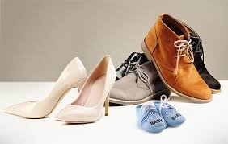

Как правильно выбрать
Некачественные или просто неподходящие туфли способны омрачить жизнь мелкими, но досадными неприятностями, например, мозолями. Помимо этого могут возникнуть и куда более серьезные проблемы — заболевания вен, суставов, мышц и даже позвоночника. Поэтому два главных правила выбора обуви очень просты: 1) лучше не экономить и 2) отказываться от красивых, но неудобных туфель. Выбирайте обувь на достаточно мягкой, гибкой подошве. Согните туфли в руках. У качественной обуви подошва легко гнется, а верх ботинка не деформируется слишком сильно. Выбирайте обувь на достаточно мягкой, гибкой подошве. Согните туфли в руках. У качественной обуви подошва легко гнется, а верх ботинка не деформируется слишком сильно. На очень тонкой подошве удобно ходить только по ровному полу, прогулки в такой обуви по асфальту вряд ли можно назвать приятными — нога будет ощущать каждый камешек.